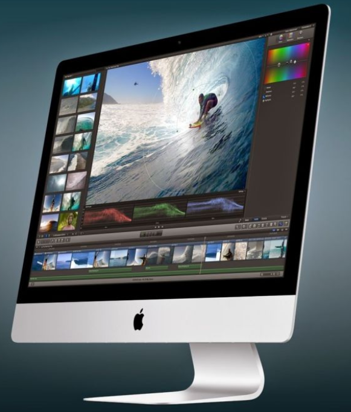

Apple
La empresa fundada el 1 de abril de 1976 por Steve Jobs, Stephen Wozniak y Ronald Wayne es la quinta marca más vendida de computadoras, según la agencia analista IDC. Su primera computadora fue la Apple I, fabricada a mano por los fundadores y que abrió las puertas a que inversionistas apoyaran el emprendimiento de los informáticos.
Ofrece un catálogo de equipos con diferentes especificaciones, aunque generalmente destinados a un público profesional. Sus computadoras trabajan con su sistema operativo exclusivo, Mac OS, cuya última versión es Mac OS X El Capitan.
Comuníquese con nosotros para que obtenga una mejor informacion sobre las marcas de computadoras en Mundi-Compu.